Painel para priorização de intervenções e revisão de itens. Comparativo PA vs PR nos gráficos; tabelas detalham itens por UF.
Use os gráficos para identificar (1) diferenças entre UFs, (2) onde o desempenho observado foge do esperado pelo modelo, e (3) quais itens/alunos priorizar. As imagens podem ser ampliadas com um clique.
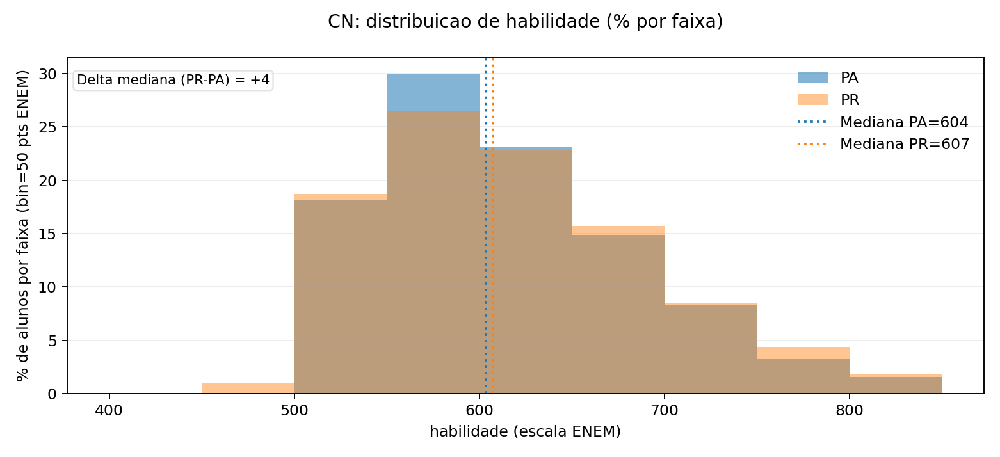
Mostra como a proficiência se distribui no grupo de estudantes (PA vs PR) nesta área.
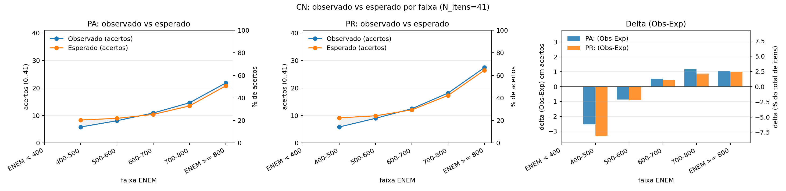
Compara o desempenho observado com o esperado pelo modelo ao longo da escala de habilidade.
Uso prático: planeje revisão por nivel (básico/intermediário/avançado) a partir das faixas com delta negativo.
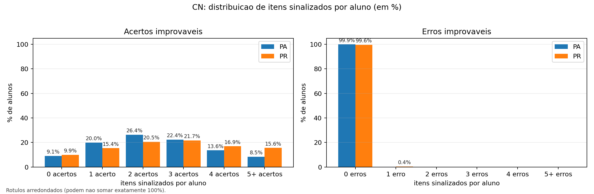
Quantifica quantos itens por aluno foram sinalizados como acerto improvável (Xi) ou erro improvável (Yi).
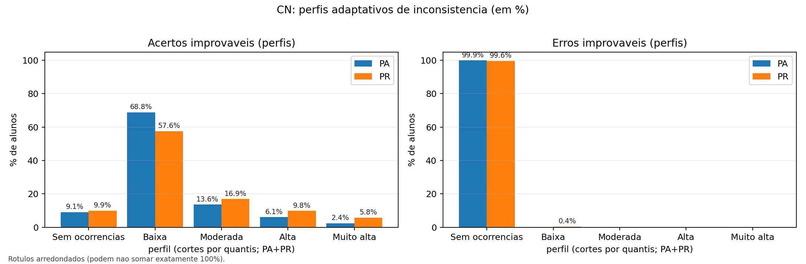
Resume Xi/Yi em categorias (Sem ocorrências/Baixa/Moderada/Alta/Muito alta) via quantis.
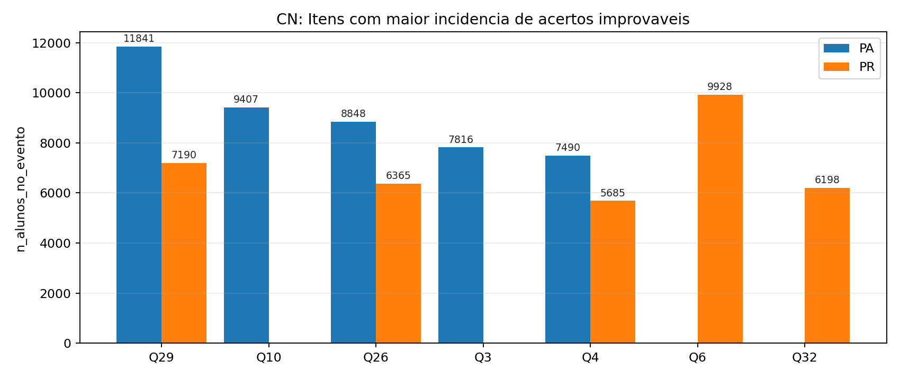
Itens com maior incidência de acertos improváveis (P* baixo e piso c alto).
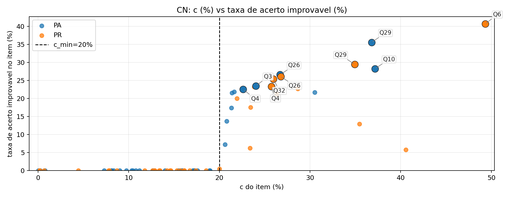
Relaciona o piso de chute (c) com a incidência de acertos improváveis.
Classificação baseada no parâmetro b (theta) com limiares fixos. A tabela abaixo lista apenas itens estáveis (a>0 e |b|<=4). Itens instáveis (excluídos aqui): 5.
Nenhum item nesta categoria.
Nenhum item nesta categoria.
Nenhum item nesta categoria.
| Questao | Item na prova | Dificuldade (ENEM) | Acertos (%) | a | c |
|---|---|---|---|---|---|
| Q6 | 96 | 668.75 | 46.76% | 0.214 | 0.8% |
| Q44 | 134 | 685.13 | 35.24% | 1.381 | 8.1% |
| Questao | Item na prova | Dificuldade (ENEM) | Acertos (%) | a | c |
|---|---|---|---|---|---|
| Q41 | 131 | 741.15 | 33.17% | 1.331 | 17.2% |
| Q40 | 130 | 754.67 | 34.64% | 1.284 | 20.6% |
| Q35 | 125 | 760.53 | 25.57% | 0.751 | 0.2% |
| Q45 | 135 | 764.46 | 22.93% | 2.588 | 15.5% |
| Q7 | 97 | 773.95 | 38.39% | 1.693 | 30.5% |
| Q12 | 102 | 790.16 | 22.43% | 1.226 | 10.3% |
| Q9 | 99 | 792.55 | 30.33% | 1.334 | 20.8% |
| Q19 | 109 | 803.84 | 40.20% | 0.328 | 9.0% |
| Q27 | 117 | 807.13 | 29.32% | 1.130 | 19.0% |
| Q15 | 105 | 831.64 | 20.66% | 1.075 | 10.8% |
| Q36 | 126 | 832.51 | 23.35% | 0.545 | 0.0% |
| Q30 | 120 | 838.38 | 13.18% | 2.329 | 10.5% |
| Q3 | 93 | 845.02 | 24.94% | 4.369 | 24.0% |
| Q42 | 132 | 845.22 | 28.22% | 1.160 | 21.3% |
| Q8 | 98 | 845.25 | 26.05% | 1.156 | 18.9% |
| Q29 | 119 | 845.90 | 38.06% | 2.771 | 36.8% |
| Q23 | 113 | 851.30 | 16.69% | 3.920 | 15.7% |
| Q37 | 127 | 853.65 | 18.13% | 3.944 | 17.2% |
| Q38 | 128 | 854.47 | 12.78% | 2.692 | 11.2% |
| Q25 | 115 | 855.48 | 16.51% | 5.757 | 15.9% |
| Q33 | 123 | 857.53 | 24.68% | 0.642 | 8.3% |
| Q17 | 107 | 862.87 | 11.45% | 2.387 | 9.8% |
| Q18 | 108 | 874.03 | 14.61% | 3.733 | 14.0% |
| Q39 | 129 | 879.71 | 18.51% | 2.639 | 17.6% |
| Q11 | 101 | 880.71 | 29.74% | 0.422 | 7.3% |
| Q31 | 121 | 880.71 | 17.32% | 9.901 | 17.1% |
| Q4 | 94 | 882.73 | 25.48% | 1.477 | 22.6% |
| Q10 | 100 | 888.66 | 42.74% | 0.920 | 37.2% |
| Q28 | 118 | 896.47 | 9.85% | 1.815 | 8.1% |
| Q21 | 111 | 900.80 | 19.36% | 1.278 | 15.9% |
| Q26 | 116 | 905.15 | 27.04% | 3.058 | 26.7% |
| Q13 | 103 | 915.49 | 22.42% | 1.859 | 21.4% |
| Q16 | 106 | 925.86 | 22.80% | 1.671 | 21.6% |
| Q22 | 112 | 944.41 | 13.00% | 2.449 | 12.7% |
Itens instáveis (ex.: a<=0 ou |b|>4) podem indicar ajuste ruim/ruído. Eles não entram nos indicadores agregados (Xi/Yi) e devem ser usados como alerta para revisão do item/material, não para inferência fina sobre alunos.
| Item | Item na prova | Motivo | a | b | b (ENEM) | c |
|---|---|---|---|---|---|---|
| Q43 | 133 | a<=0 | -2.804 | -2.707 | 329.30 | 19.9% |
| Q14 | 104 | a<=0, |b|>4 | -0.147 | -15.603 | -960.25 | 14.8% |
| Q5 | 95 | |b|>4 | 0.256 | 6.519 | 1251.88 | 12.1% |
| Q20 | 110 | |b|>4 | 0.201 | 7.006 | 1300.57 | 10.9% |
| Q32 | 122 | |b|>4 | 0.299 | 12.137 | 1813.68 | 23.8% |
| Item | Item na prova | Motivo | a | b | b (ENEM) | c |
|---|---|---|---|---|---|---|
| Q43 | 133 | a<=0 | -2.434 | -2.742 | 325.77 | 17.8% |
| Q14 | 104 | a<=0, |b|>4 | -1.112 | -4.273 | 172.69 | 20.7% |
| Q5 | 95 | |b|>4 | 0.146 | 7.342 | 1334.19 | 7.5% |
| Q20 | 110 | |b|>4 | 0.181 | 4.423 | 1042.28 | 3.4% |
Use os gráficos para identificar (1) diferenças entre UFs, (2) onde o desempenho observado foge do esperado pelo modelo, e (3) quais itens/alunos priorizar. As imagens podem ser ampliadas com um clique.
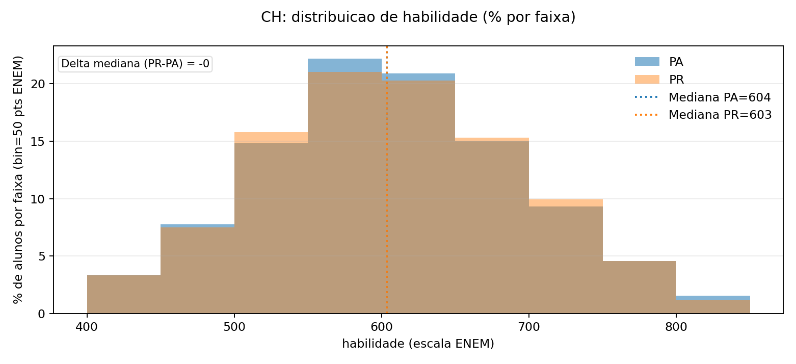
Mostra como a proficiência se distribui no grupo de estudantes (PA vs PR) nesta área.
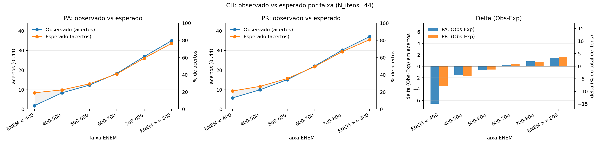
Compara o desempenho observado com o esperado pelo modelo ao longo da escala de habilidade.
Uso prático: planeje revisão por nivel (básico/intermediário/avançado) a partir das faixas com delta negativo.
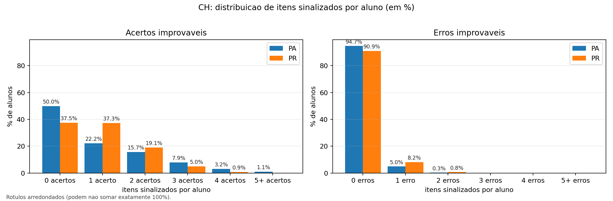
Quantifica quantos itens por aluno foram sinalizados como acerto improvável (Xi) ou erro improvável (Yi).
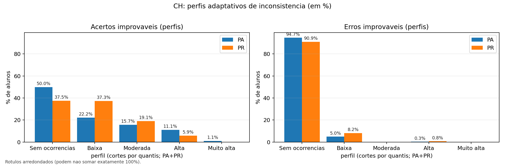
Resume Xi/Yi em categorias (Sem ocorrências/Baixa/Moderada/Alta/Muito alta) via quantis.
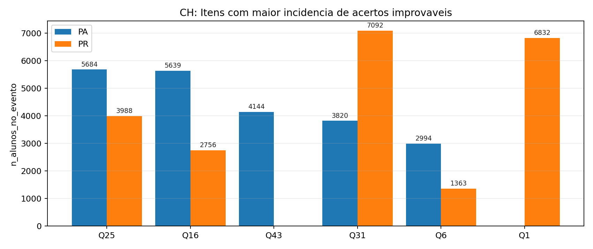
Itens com maior incidência de acertos improváveis (P* baixo e piso c alto).
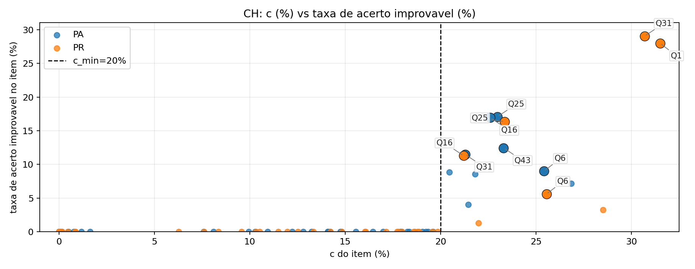
Relaciona o piso de chute (c) com a incidência de acertos improváveis.
Classificação baseada no parâmetro b (theta) com limiares fixos. A tabela abaixo lista apenas itens estáveis (a>0 e |b|<=4). Itens instáveis (excluídos aqui): 2.
| Questao | Item na prova | Dificuldade (ENEM) | Acertos (%) | a | c |
|---|---|---|---|---|---|
| Q5 | 50 | 458.62 | 73.65% | 0.831 | 0.0% |
| Q19 | 64 | 470.63 | 81.48% | 1.658 | 0.0% |
| Questao | Item na prova | Dificuldade (ENEM) | Acertos (%) | a | c |
|---|---|---|---|---|---|
| Q41 | 86 | 492.60 | 72.66% | 1.139 | 0.0% |
| Q32 | 77 | 542.72 | 63.13% | 1.204 | 0.0% |
| Questao | Item na prova | Dificuldade (ENEM) | Acertos (%) | a | c |
|---|---|---|---|---|---|
| Q24 | 69 | 620.24 | 51.07% | 1.149 | 10.3% |
| Q36 | 81 | 632.66 | 48.28% | 0.934 | 8.1% |
| Q4 | 49 | 632.69 | 52.91% | 2.140 | 21.5% |
| Q37 | 82 | 645.41 | 45.03% | 2.258 | 14.1% |
| Q3 | 48 | 649.66 | 45.24% | 0.411 | 0.5% |
| Questao | Item na prova | Dificuldade (ENEM) | Acertos (%) | a | c |
|---|---|---|---|---|---|
| Q10 | 55 | 655.26 | 41.25% | 0.746 | 0.1% |
| Q28 | 73 | 665.61 | 49.76% | 1.923 | 26.8% |
| Q15 | 60 | 670.50 | 44.22% | 1.506 | 17.9% |
| Q18 | 63 | 681.69 | 37.20% | 1.388 | 9.9% |
| Q14 | 59 | 684.33 | 40.61% | 2.246 | 20.5% |
| Q20 | 65 | 686.29 | 40.67% | 1.900 | 19.6% |
| Q2 | 47 | 701.95 | 40.97% | 0.389 | 0.8% |
| Q22 | 67 | 703.95 | 37.93% | 1.741 | 19.3% |
| Q11 | 56 | 714.52 | 39.41% | 1.161 | 18.3% |
| Q34 | 79 | 714.81 | 33.44% | 2.110 | 18.0% |
| Q6 | 51 | 716.09 | 42.22% | 1.465 | 25.4% |
| Q43 | 88 | 724.81 | 37.56% | 1.781 | 23.3% |
| Q12 | 57 | 726.26 | 38.28% | 1.414 | 21.8% |
| Questao | Item na prova | Dificuldade (ENEM) | Acertos (%) | a | c |
|---|---|---|---|---|---|
| Q8 | 53 | 728.65 | 30.80% | 1.645 | 14.8% |
| Q44 | 89 | 732.60 | 36.74% | 0.900 | 14.1% |
| Q45 | 90 | 735.51 | 28.54% | 2.367 | 17.0% |
| Q33 | 78 | 737.67 | 33.65% | 1.439 | 18.3% |
| Q29 | 74 | 739.64 | 38.73% | 0.726 | 14.2% |
| Q7 | 52 | 748.23 | 25.79% | 2.569 | 16.5% |
| Q27 | 72 | 753.65 | 21.84% | 3.781 | 14.8% |
| Q42 | 87 | 790.55 | 11.81% | 3.438 | 7.6% |
| Q38 | 83 | 790.86 | 21.49% | 2.163 | 15.6% |
| Q25 | 70 | 796.37 | 31.24% | 1.421 | 23.0% |
| Q26 | 71 | 797.19 | 25.22% | 1.136 | 13.2% |
| Q17 | 62 | 803.64 | 28.70% | 0.837 | 12.8% |
| Q35 | 80 | 809.41 | 33.61% | 0.359 | 1.6% |
| Q16 | 61 | 810.79 | 30.34% | 1.334 | 22.6% |
| Q21 | 66 | 830.21 | 14.67% | 2.673 | 12.2% |
| Q9 | 54 | 841.33 | 20.71% | 3.060 | 19.2% |
| Q23 | 68 | 873.74 | 12.80% | 2.020 | 10.9% |
| Q13 | 58 | 883.10 | 23.95% | 1.159 | 19.0% |
| Q31 | 76 | 897.94 | 31.03% | 0.720 | 21.3% |
| Q39 | 84 | 926.61 | 26.60% | 0.331 | 1.2% |
Itens instáveis (ex.: a<=0 ou |b|>4) podem indicar ajuste ruim/ruído. Eles não entram nos indicadores agregados (Xi/Yi) e devem ser usados como alerta para revisão do item/material, não para inferência fina sobre alunos.
| Item | Item na prova | Motivo | a | b | b (ENEM) | c |
|---|---|---|---|---|---|---|
| Q1 | 46 | |b|>4 | 0.173 | 4.728 | 1072.84 | 4.3% |
| Q30 | 75 | |b|>4 | 0.321 | 4.133 | 1013.30 | 4.1% |
| Item | Item na prova | Motivo | a | b | b (ENEM) | c |
|---|---|---|---|---|---|---|
| Q30 | 75 | |b|>4 | 0.228 | 4.214 | 1021.44 | 0.1% |
Use os gráficos para identificar (1) diferenças entre UFs, (2) onde o desempenho observado foge do esperado pelo modelo, e (3) quais itens/alunos priorizar. As imagens podem ser ampliadas com um clique.
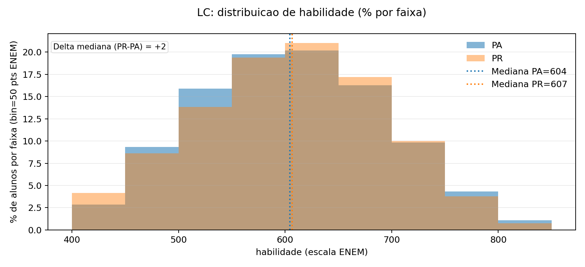
Mostra como a proficiência se distribui no grupo de estudantes (PA vs PR) nesta área.
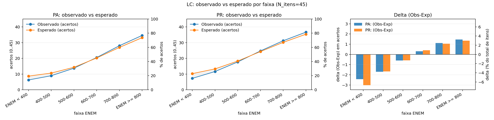
Compara o desempenho observado com o esperado pelo modelo ao longo da escala de habilidade.
Uso prático: planeje revisão por nivel (básico/intermediário/avançado) a partir das faixas com delta negativo.
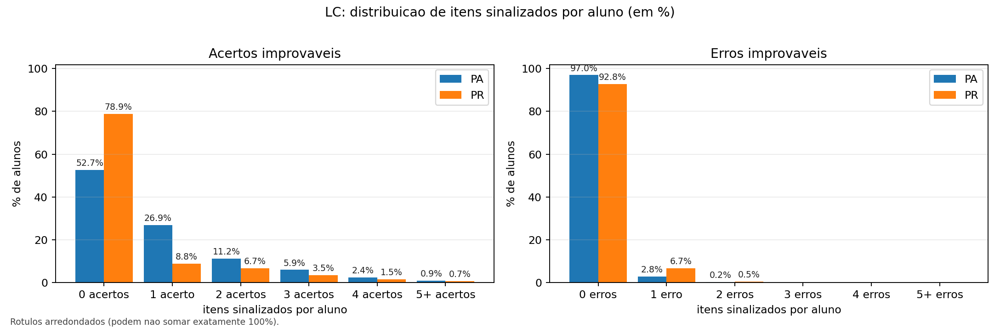
Quantifica quantos itens por aluno foram sinalizados como acerto improvável (Xi) ou erro improvável (Yi).
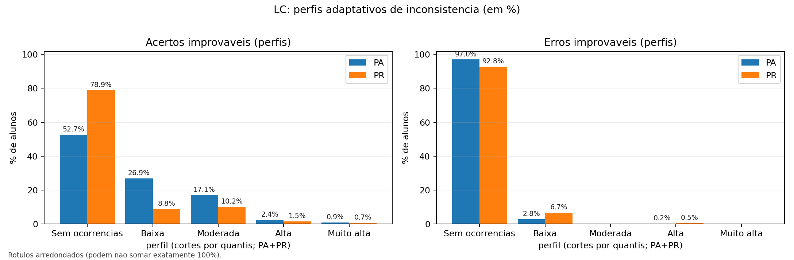
Resume Xi/Yi em categorias (Sem ocorrências/Baixa/Moderada/Alta/Muito alta) via quantis.
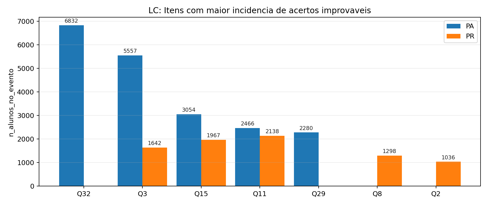
Itens com maior incidência de acertos improváveis (P* baixo e piso c alto).
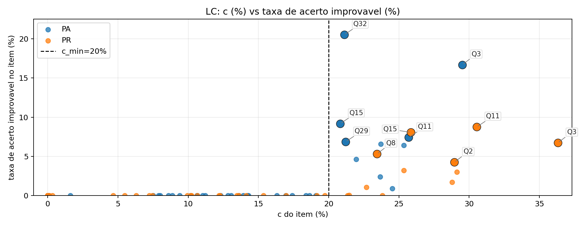
Relaciona o piso de chute (c) com a incidência de acertos improváveis.
Classificação baseada no parâmetro b (theta) com limiares fixos. A tabela abaixo lista apenas itens estáveis (a>0 e |b|<=4). Itens instáveis (excluídos aqui): 2.
Nenhum item nesta categoria.
| Questao | Item na prova | Dificuldade (ENEM) | Acertos (%) | a | c |
|---|---|---|---|---|---|
| Q10 | 10 | 518.67 | 63.00% | 0.730 | 0.0% |
| Q34 | 34 | 525.11 | 75.61% | 1.797 | 17.0% |
| Q35 | 35 | 534.89 | 60.55% | 0.734 | 0.0% |
| Questao | Item na prova | Dificuldade (ENEM) | Acertos (%) | a | c |
|---|---|---|---|---|---|
| Q13 | 13 | 556.48 | 57.82% | 0.827 | 0.0% |
| Q41 | 41 | 566.14 | 62.67% | 1.535 | 8.6% |
| Q12 | 12 | 570.80 | 52.76% | 0.387 | 0.1% |
| Q24 | 24 | 587.59 | 58.25% | 1.354 | 10.6% |
| Q4 | 4 | 590.73 | 56.69% | 0.858 | 10.2% |
| Q43 | 43 | 599.97 | 54.65% | 1.454 | 8.9% |
| Q31 | 31 | 616.20 | 55.32% | 1.556 | 17.4% |
| Q44 | 44 | 624.50 | 53.61% | 1.895 | 18.4% |
| Q28 | 28 | 626.49 | 46.53% | 0.577 | 0.1% |
| Q21 | 21 | 636.58 | 45.93% | 0.476 | 0.1% |
| Q5 | 5 | 637.22 | 54.55% | 1.520 | 23.7% |
| Q36 | 36 | 641.19 | 46.18% | 1.946 | 12.8% |
| Questao | Item na prova | Dificuldade (ENEM) | Acertos (%) | a | c |
|---|---|---|---|---|---|
| Q17 | 17 | 651.70 | 42.33% | 0.665 | 0.1% |
| Q6 | 6 | 655.22 | 48.96% | 0.593 | 11.2% |
| Q1 | 1 | 662.85 | 50.05% | 0.862 | 18.6% |
| Q23 | 23 | 669.63 | 41.07% | 1.251 | 10.7% |
| Q30 | 30 | 696.91 | 35.23% | 0.765 | 1.6% |
| Q29 | 29 | 699.49 | 41.57% | 1.484 | 21.2% |
| Q2 | 2 | 699.92 | 43.88% | 1.397 | 23.7% |
| Q14 | 14 | 699.97 | 40.51% | 0.783 | 10.6% |
| Q9 | 9 | 702.55 | 32.95% | 1.733 | 12.3% |
| Q3 | 3 | 706.17 | 43.42% | 2.426 | 29.5% |
| Q8 | 8 | 724.07 | 43.41% | 1.160 | 25.4% |
| Questao | Item na prova | Dificuldade (ENEM) | Acertos (%) | a | c |
|---|---|---|---|---|---|
| Q18 | 18 | 729.76 | 41.22% | 1.047 | 22.0% |
| Q7 | 7 | 744.89 | 45.17% | 0.758 | 24.5% |
| Q22 | 22 | 745.39 | 34.46% | 0.804 | 11.0% |
| Q11 | 11 | 746.77 | 41.65% | 1.082 | 25.7% |
| Q39 | 39 | 749.15 | 32.89% | 1.018 | 13.9% |
| Q37 | 37 | 758.21 | 34.36% | 0.627 | 8.0% |
| Q45 | 45 | 768.15 | 21.61% | 2.463 | 14.3% |
| Q27 | 27 | 771.17 | 23.55% | 1.711 | 13.6% |
| Q19 | 19 | 781.83 | 27.21% | 1.095 | 13.1% |
| Q16 | 16 | 797.68 | 11.90% | 2.925 | 7.9% |
| Q32 | 32 | 838.10 | 23.29% | 2.348 | 21.1% |
| Q15 | 15 | 853.34 | 32.28% | 0.781 | 20.8% |
| Q40 | 40 | 855.63 | 20.04% | 3.065 | 19.1% |
| Q38 | 38 | 873.57 | 8.35% | 2.801 | 7.5% |
| Q33 | 33 | 874.32 | 19.01% | 1.629 | 16.3% |
| Q42 | 42 | 876.61 | 16.43% | 1.769 | 14.2% |
| Q20 | 20 | 888.30 | 24.11% | 0.610 | 9.4% |
Itens instáveis (ex.: a<=0 ou |b|>4) podem indicar ajuste ruim/ruído. Eles não entram nos indicadores agregados (Xi/Yi) e devem ser usados como alerta para revisão do item/material, não para inferência fina sobre alunos.
| Item | Item na prova | Motivo | a | b | b (ENEM) | c |
|---|---|---|---|---|---|---|
| Q25 | 25 | a<=0 | -1.736 | -3.139 | 286.11 | 6.7% |
| Q26 | 26 | a<=0 | -1.528 | -3.472 | 252.81 | 11.7% |
Nenhum item instavel nesta UF (no criterio a<=0 ou |b|>4).
Use os gráficos para identificar (1) diferenças entre UFs, (2) onde o desempenho observado foge do esperado pelo modelo, e (3) quais itens/alunos priorizar. As imagens podem ser ampliadas com um clique.
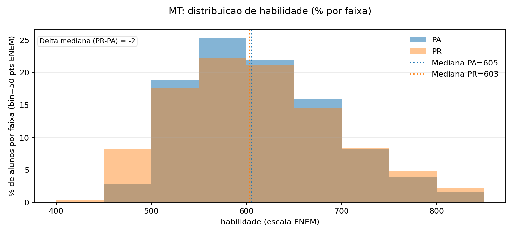
Mostra como a proficiência se distribui no grupo de estudantes (PA vs PR) nesta área.
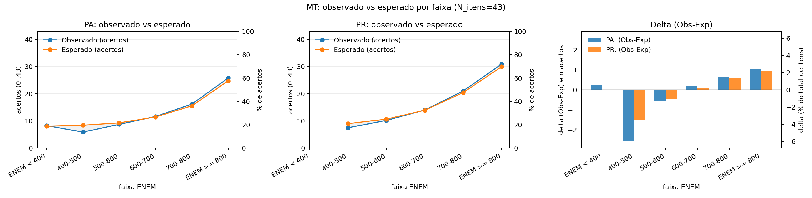
Compara o desempenho observado com o esperado pelo modelo ao longo da escala de habilidade.
Uso prático: planeje revisão por nivel (básico/intermediário/avançado) a partir das faixas com delta negativo.
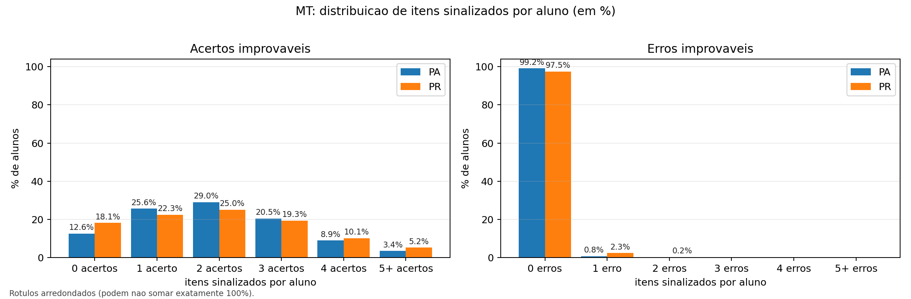
Quantifica quantos itens por aluno foram sinalizados como acerto improvável (Xi) ou erro improvável (Yi).
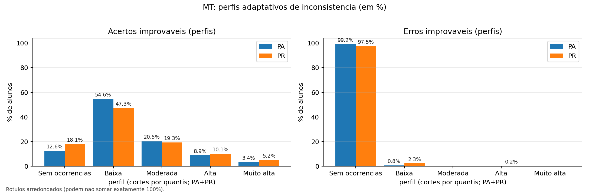
Resume Xi/Yi em categorias (Sem ocorrências/Baixa/Moderada/Alta/Muito alta) via quantis.
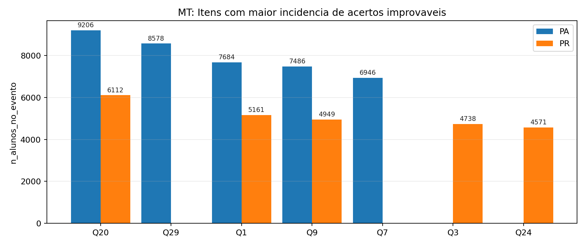
Itens com maior incidência de acertos improváveis (P* baixo e piso c alto).
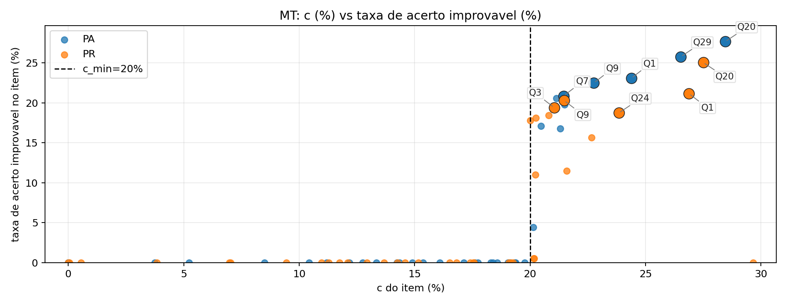
Relaciona o piso de chute (c) com a incidência de acertos improváveis.
Classificação baseada no parâmetro b (theta) com limiares fixos. A tabela abaixo lista apenas itens estáveis (a>0 e |b|<=4). Itens instáveis (excluídos aqui): 7.
Nenhum item nesta categoria.
Nenhum item nesta categoria.
| Questao | Item na prova | Dificuldade (ENEM) | Acertos (%) | a | c |
|---|---|---|---|---|---|
| Q13 | 148 | 592.51 | 51.70% | 1.091 | 0.0% |
| Q42 | 177 | 636.74 | 51.71% | 1.397 | 18.4% |
| Questao | Item na prova | Dificuldade (ENEM) | Acertos (%) | a | c |
|---|---|---|---|---|---|
| Q17 | 152 | 651.59 | 45.69% | 2.588 | 18.3% |
| Q15 | 150 | 674.85 | 41.06% | 1.093 | 10.4% |
| Q44 | 179 | 685.55 | 38.42% | 1.676 | 14.9% |
| Q34 | 169 | 717.14 | 38.87% | 1.354 | 20.1% |
| Questao | Item na prova | Dificuldade (ENEM) | Acertos (%) | a | c |
|---|---|---|---|---|---|
| Q14 | 149 | 738.00 | 36.98% | 0.856 | 14.2% |
| Q36 | 171 | 748.70 | 18.90% | 2.572 | 8.5% |
| Q4 | 139 | 761.34 | 29.40% | 2.328 | 21.3% |
| Q30 | 165 | 766.02 | 27.40% | 2.169 | 19.1% |
| Q41 | 176 | 787.70 | 19.53% | 2.824 | 14.3% |
| Q38 | 173 | 798.94 | 25.54% | 2.762 | 21.5% |
| Q35 | 170 | 814.83 | 18.78% | 3.539 | 16.1% |
| Q1 | 136 | 825.08 | 27.05% | 2.638 | 24.4% |
| Q40 | 175 | 826.29 | 25.05% | 1.305 | 17.6% |
| Q7 | 142 | 839.86 | 22.92% | 3.846 | 21.5% |
| Q20 | 155 | 841.70 | 29.62% | 4.414 | 28.4% |
| Q3 | 138 | 842.57 | 22.41% | 4.404 | 21.1% |
| Q29 | 164 | 844.57 | 27.61% | 4.742 | 26.5% |
| Q19 | 154 | 846.35 | 20.73% | 3.625 | 19.3% |
| Q18 | 153 | 855.45 | 13.30% | 4.157 | 12.2% |
| Q26 | 161 | 860.94 | 27.71% | 0.866 | 17.7% |
| Q28 | 163 | 863.62 | 27.25% | 1.076 | 20.5% |
| Q5 | 140 | 865.98 | 28.04% | 0.917 | 19.4% |
| Q39 | 174 | 867.29 | 14.92% | 2.512 | 13.3% |
| Q27 | 162 | 869.52 | 24.16% | 1.046 | 17.1% |
| Q45 | 180 | 871.48 | 11.89% | 18.984 | 11.2% |
| Q37 | 172 | 874.53 | 19.19% | 4.763 | 18.6% |
| Q16 | 151 | 876.25 | 31.15% | 0.366 | 5.2% |
| Q22 | 157 | 878.66 | 16.39% | 2.846 | 15.4% |
| Q24 | 159 | 880.42 | 26.67% | 0.930 | 19.0% |
| Q9 | 144 | 885.62 | 23.21% | 4.658 | 22.8% |
| Q12 | 147 | 891.61 | 27.12% | 0.351 | 0.0% |
| Q8 | 143 | 891.65 | 21.31% | 1.951 | 19.8% |
| Q32 | 167 | 899.79 | 13.43% | 2.844 | 12.8% |
| Q31 | 166 | 924.32 | 21.52% | 0.481 | 3.7% |
Itens instáveis (ex.: a<=0 ou |b|>4) podem indicar ajuste ruim/ruído. Eles não entram nos indicadores agregados (Xi/Yi) e devem ser usados como alerta para revisão do item/material, não para inferência fina sobre alunos.
| Item | Item na prova | Motivo | a | b | b (ENEM) | c |
|---|---|---|---|---|---|---|
| Q10 | 145 | a<=0 | -6.847 | -2.459 | 354.07 | 17.6% |
| Q25 | 160 | a<=0, |b|>4 | -0.096 | -17.054 | -1105.44 | 7.1% |
| Q2 | 137 | |b|>4 | 0.116 | 14.459 | 2045.92 | 10.8% |
| Q21 | 156 | |b|>4 | 0.077 | 25.092 | 3109.21 | 1.8% |
| Q23 | 158 | |b|>4 | 0.286 | 5.154 | 1115.44 | 8.4% |
| Q33 | 168 | |b|>4 | 0.353 | 6.187 | 1218.73 | 14.9% |
| Q43 | 178 | |b|>4 | 0.178 | 10.226 | 1622.60 | 4.6% |
| Item | Item na prova | Motivo | a | b | b (ENEM) | c |
|---|---|---|---|---|---|---|
| Q2 | 137 | |b|>4 | 0.158 | 15.880 | 2187.98 | 19.7% |
| Q23 | 158 | |b|>4 | 0.163 | 6.135 | 1213.50 | 2.7% |
| Q25 | 160 | |b|>4 | 0.017 | 90.087 | 9608.67 | 4.1% |
| Q33 | 168 | |b|>4 | 0.632 | 4.819 | 1081.89 | 23.6% |
| Q43 | 178 | |b|>4 | 0.664 | 5.378 | 1137.79 | 17.1% |